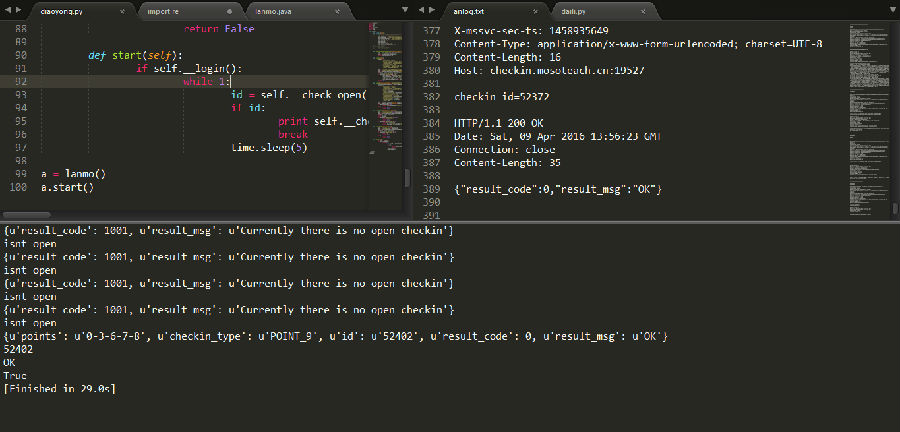
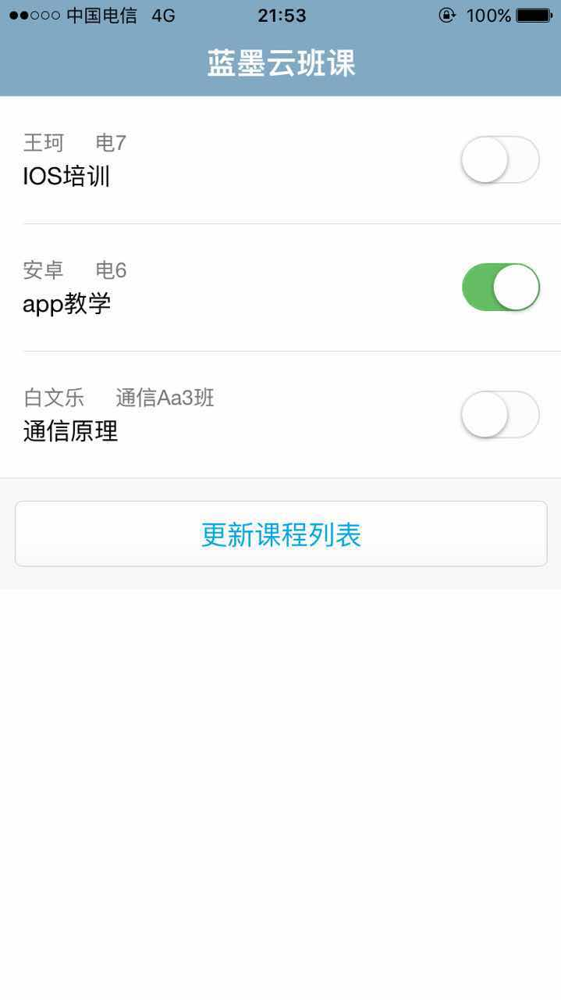

概述
这个APP可以查看课程列表，课程成员列表，签到，前端记录，实时群聊的等。
逆向分析后提取API可以用来自动签到，软件即时聊天用的环信SDK,也可以做个聊天机器人在群里BB...
第一部 抓包
抓包工具使用小提琴，也就是fiddler，去官网下载的，最新的为V4。设置中开启远程连接。
宿舍是联通网，宿舍路由器只提供转发，手机联网后和电脑不一定在一个网段，所以只能开热点了。热点工具用的猎豹WIFI。
不知道为什么，ios连不上电脑的热点，只好把之前的安卓机找出来用了。
手机连上热点，代理设置为自动，填写上代理信息，打开个网页测试下电脑能否抓取数据包。
环境搞好后就开始抓包了，抓包还是比较简单的，从登录，刷新课程列表，成员列表，签到等，比较简单。下面简单分析几个典型的API。
所有API都是post方式请求
登录
POST http://api.mosoteach.cn/mssvc/index.php/passport/login HTTP/1.1 Connection: close Accept-Encoding: gzip;q=0.7,*;q=0.7 Content-Type: application/x-www-form-urlencoded; charset=UTF-8 Content-Length: 450 User-Agent: Dalvik/2.1.0 (Linux; U; Android 5.0.2; MI 2SC MIUI/5.9.24) Host: api.mosoteach.cn account_name=登录帐号&user_pwd=登录密码&device_code=设备码&public_key=公匙&device_pn_code=pn码&device_type=ANDROID&app_version_number=42&app_version_name=1.9.0&app_id=MTANDROID&dpr=2.0 前面参数牵涉到个人信息，就文字表示了，后面是设备类型，APP版本，版本号，id,dpr参数。 注意这个时候的请求头。
返回
HTTP/1.1 200 OK
Date: Sat, 09 Apr 2016 13:29:13 GMT
Server: Apache/2.4.7 (Ubuntu)
X-Powered-By: PHP/5.5.9-1ubuntu4.14
Vary: Accept-Encoding
Content-Length: 656
Connection: close
Content-Type: application/json; charset=utf-8
{"user":{"user_id":"5F7673****************31","account_name":"*********","avatar_url":"http:***********e8919fd195112591-0.jpg@!s200x200?v=1457567915","nick_name":"********","student_no":"*********","delete_flag":"N","access_id":"*****","access_secret":"*****","full_name":"**","em_pwd":"****-u","student_score":"34","teacher_score":"0","student_level":"2","phone_number":"","phone_number_flag":"N","email_flag":"Y","last_sec_update_time":"2016-03-26 03:54:09","last_sec_update_ts_s":"1458935649"},"result_code":0,"result_msg":"OK"}
返回的是json，信息很明显，注意一下access_id，access_secret，last_sec_update_ts_s，后面要用到。再看一下检查签到是否开启的
POST http://api.mosoteach.cn/mssvc/index.php/checkin/current_open HTTP/1.1 Connection: close Accept-Encoding: gzip;q=0.7,*;q=0.7 User-Agent: Dalvik/2.1.0 (Linux; U; Android 5.0.2; MI 2SC Build/LRX22G) Date: Sat, 09 Apr 2016 13:54:31 GMT+00:00 X-mssvc-signature: d43b1d213eabd84045265f02f60dde460fdc602f X-mssvc-access-id: **************** X-teach-version: 1.9.0 X-mssvc-sec-ts: 1458935649 Content-Type: application/x-www-form-urlencoded; charset=UTF-8 Content-Length: 52 Host: api.mosoteach.cn clazz_course_id=C7******-6F9D-4EA2-**************** 注意下头部信息，和登陆时的头部不一样
返回
HTTP/1.1 200 OK
Date: Sat, 09 Apr 2016 13:54:30 GMT
Server: Apache/2.4.9 (Ubuntu)
X-Powered-By: PHP/5.5.22-1+deb.sury.org~precise+1
Connection: close
Vary: Accept-Encoding
Content-Length: 94
Content-Type: application/json; charset=utf-8
{"id":"52372","checkin_type":"POINT_9","points":"0-3-6-7-8","result_code":0,"result_msg":"OK"}
返回JSON，要签到的课程id，签到方式，一键前端或者九宫格，以及九宫格手势，0~8 代表3*3的九宫格数据。POST信息中没有用户信息，看到请求头也应该直接就能清楚了，头部包涵用户验证信息，
X-mssvc-signature ， X-mssvc-access-id ，X-mssvc-sec-ts
登录的时候返回access-id 和 last_sec_update_sec_s ，对比后和X-mssvc-access-id ，X-mssvc-sec-ts一样。所以 签名 是客户端生成用来检验请求合法的标志了。算法只能在APP里面看了。
补充一句，抓包的时候发现即时通信是用的环信SDK，所以根据接口可以做个聊天机器人了...或者做个主教助手，导入题库，帮老师回答问题什么的。
第二部 逆向APP
软件没有加固...真可悲...
apk包中提取.class，使用d2j-dex2jar反编译，生成一个jar。
使用jd-gui阅读反编译的代码。
阅读代码方法有很多种，这里我直接搜索字符串X-mssvc-signature，直接定位到了一个封装请求头的函数。
private ArrayList ak(String paramString)
{
v.bk localbk = MTApp.b().c();
ArrayList localArrayList = new ArrayList();
if (localbk == null) {
aa.k.c("MTClient", "Signature User == null)");
}
do
{
return localArrayList;
String str = aa.c.a(new Date());
localArrayList.add(new BasicNameValuePair("User-Agent", r()));
localArrayList.add(new BasicNameValuePair("Date", str));
localArrayList.add(new BasicNameValuePair("X-mssvc-signature", b(paramString, localbk.a, str, localbk.h)));
localArrayList.add(new BasicNameValuePair("X-mssvc-access-id", localbk.g));
localArrayList.add(new BasicNameValuePair("X-teach-version", "1.9.0"));
} while (TextUtils.isEmpty(localbk.p));
localArrayList.add(new BasicNameValuePair("X-mssvc-sec-ts", localbk.p));
return localArrayList;
}可以看出signature由b函数生成，4个参数。
paramString为ak函数参数
localbk.a loaclbk.h为本类的变量。
str为aa.c.a生成，aa.c.a的参数为当前日期。
在文件头看到了localbk.a loaclbk.h声明，下面有赋值
this.a = localJSONObject.getString("user_id");
this.h = localJSONObject.optString("access_secret");接下来看str的生成函数aa.c.a
public static String a(Date paramDate)
{
if (paramDate == null) {
return null;
}
if (g == null)
{
g = new SimpleDateFormat("EEE, dd MMM yyyy HH:mm:ss z", Locale.US);
g.setTimeZone(TimeZone.getTimeZone("GMT"));
}
return g.format(paramDate);
}可见就是格式化了一下当前时间
下面看ak的参数是什么。
ak是个私有函数，所以肯定在本类或者子类调用到了，阅读代码后在本类中找到调用
ak("http://api.mosoteach.cn/mssvc/index.php/ccfile/get_file_url")看出就是请求API的地址。
文件头部也声明了所有API的地址
分析到这可以发现，不用抓包直接逆向就OK了...
下面看生成signature的b函数
private String b(String paramString1, String paramString2, String paramString3, String paramString4)
{
return aa.c.a(paramString4, String.format("%s|%s|%s", new Object[] { paramString1, paramString2, paramString3 }));
}将前三个字符串参数格式化，和第四个参数 作为aa.c.a函数的参数，此处aa.c.a和上面不是同一个函数，参数不同。
public static String a(String paramString1, String paramString2)
{
if ((TextUtils.isEmpty(paramString1)) || (TextUtils.isEmpty(paramString2))) {
return null;
}
try
{
SecretKeySpec localSecretKeySpec = new SecretKeySpec(paramString1.getBytes(), "HmacSHA1");
Mac localMac = Mac.getInstance("HmacSHA1");
localMac.init(localSecretKeySpec);
localMac.update(paramString2.getBytes());
String str = b(localMac.doFinal());
return str;
}
catch (NoSuchAlgorithmException localNoSuchAlgorithmException)
{
localNoSuchAlgorithmException.printStackTrace();
return null;
}
catch (InvalidKeyException localInvalidKeyException)
{
localInvalidKeyException.printStackTrace();
}
return null;
}可以看出该函数对参数进行了hmacsha1加密。
OK分析到这就可以调用他们的API了。
整理下java函数，新建一个java文件，编译运行，和之前数据对比，发现里面有个坑...不过简单测试后就解决了。
第三部 python实现
没用过JAVA，以及JAVA web，php抓取不好用（主要是用过python抓取后...），所以准备用python写个服务端，配合客户端使用。
python中进行hmacsha1加密...结果不一样。所以只能调用java的输出了。是时候学点java了！
首先想到的是os.popen(cmd),读取返回信息就OK了，简单方便。不过做之前先百度下，看看有没有解决方案，搜索到一个框架，python调用java,jPype。好像内部通过JVM虚拟机实现，太麻烦，果断放弃。
用os.popen(cmd)在win10上测试没用题，在阿里云服务器上（centos环境）测试也没问题。
def __get_date_and_signature(self,api_url,user_id,access_secret): cmd = 'java lanmo "%s" "%s" "%s"'%(api_url,user_id,access_secret) res = os.popen(cmd).readlines() return res[1],res[0][:-1]

第四部 利用
为了用着方便，所以有必要做个客户端，这几天正在看Vue手册，和之前使用过flask。
所以服务端用python写，使用flask框架。
客户端用APICloud，生成安卓和IOS客户端，客户端web用Vue+Frozen UI
功能：自动检测并签到...

以后要是快迟到了，再也不跑着去上课了......